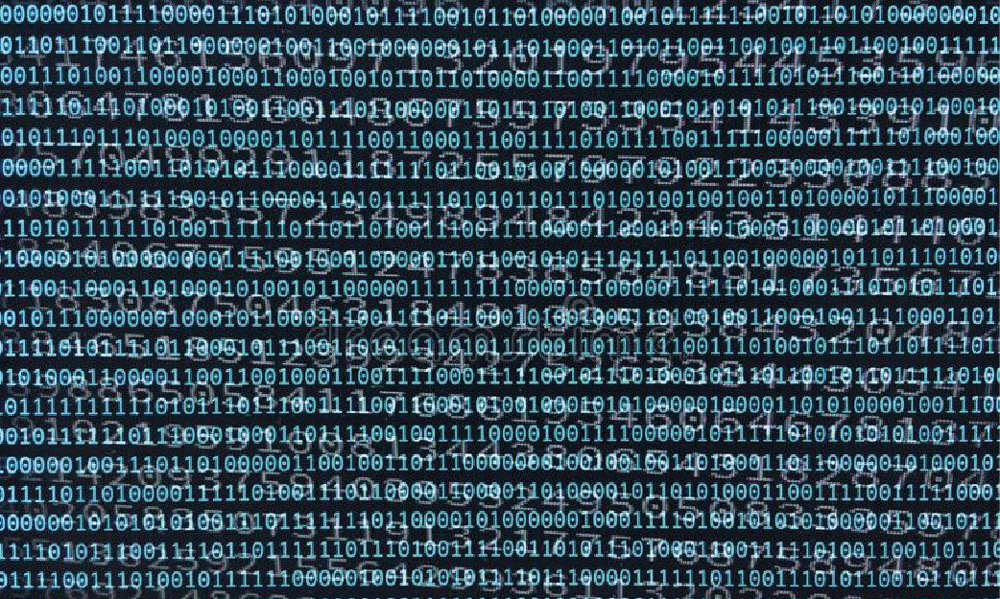

Lev Manovich es autor de libros sobre teoría de nuevos medios, profesor de informática en City University of New York, Graduate Center, Estados Unidos y profesor visitante en la European Graduate School en Saas-Fee, Suiza. La investigación y la enseñanza de Manovich se centra en las humanidades digitales, la informática social, el arte y la teoría de los nuevos medios, y los estudios de software.
Aquí podemos ver algunos proyectos hechos por Lev
Nombre 1
trata sobre....
Nombre 1
trata sobre....
Nombre 1
trata sobre....

La codificación numérica de los objetos culturales mediante los lenguajes informáticos permite la programación y manipulación del objeto codificado a niveles imposibles sin la versatilidad del código informático.
La codificación de los objetos permite la segmentación modular y establece un conjunto de módulos interrelacionables, que tienen sentido por sí mismos, pero que también funcionan orgánicamente en correlación con otros módulos para formar un conjunto más grande. A pesar de que cada uno de los módulos que forman una página web, por ejemplo, tengan sentido de forma aislada, el mensaje central, el objetivo de la web, se mantiene en la suma de módulos. Es lo que se denomina estructura fractal de los nuevos medios.
La codificación numérica y la estructura modular de los objetos de los nuevos medios permite automatizar muchas de las acciones de creación, manipulación y acceso a la información; la programación de aplicaciones con capacidad para ejecutar acciones determinadas facilita los procesos de creación digital.
No copien esta plantilla para su proyecto web, se les descontará puntos si lo hacen. ¡Atrevánse a salirse del esquema y explorar!